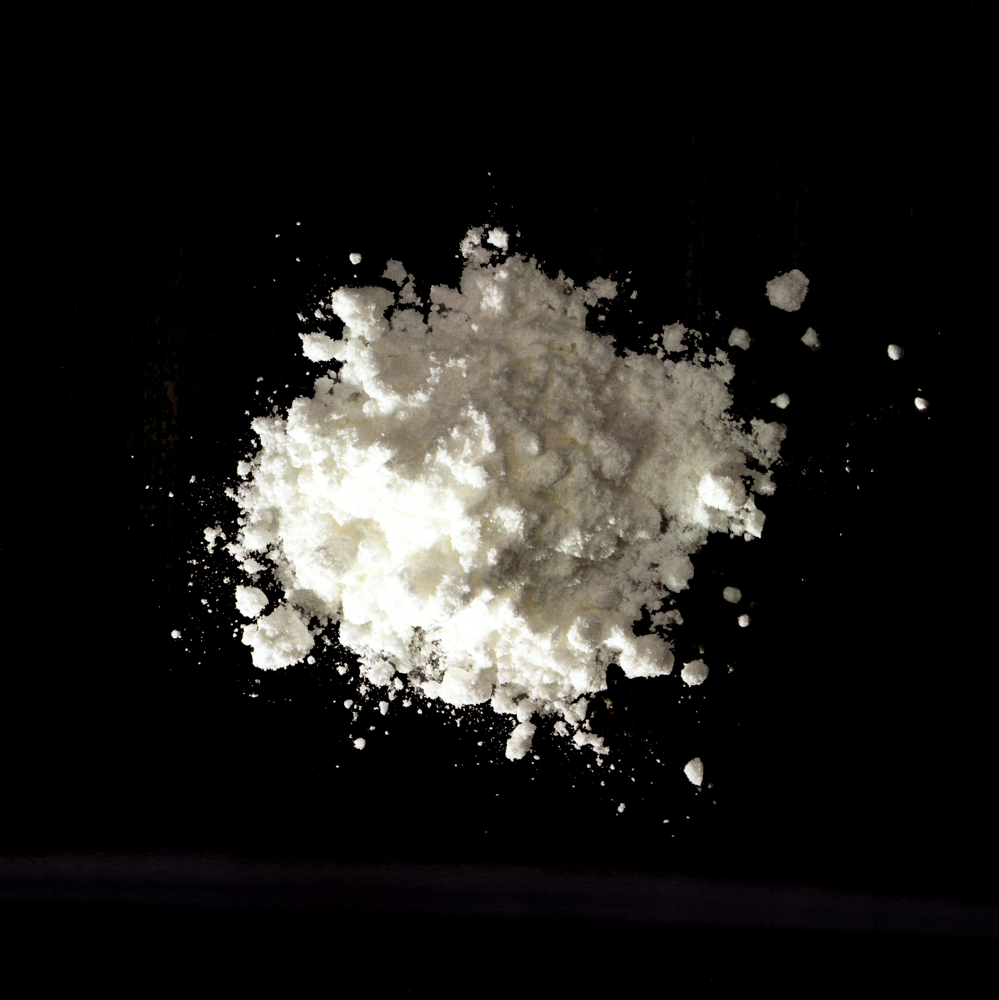

Ethylenediaminetetraacetic
acid (EDTA)

62-3-9
Synonyms or siblings
Calcium disodium EDTA, Disodium EDTA dihydrate, Edetate
Funtion
Preservative - Antioxidant
Description
Ethylenediaminetetraacetic acid (EDTA) prevents oxidation in foods by binding with trace metals, reducing rancidity and vitamin degradation. Used in foods like potatoes and canned crabmeat, it's also common in industrial products and medical applications. While safe in small amounts, it can become an environmental pollutant. In food, EDTA also helps prevent the formation of benzene, a carcinogen.
다양한 이름
이디티에이, 이.디.티.에이.이나트륨, 이.디.티.에이.칼슘이나트륨
기능
방부제, 산화방지제
설명
이디티에이(EDTA)는 금속 이온의 활성을 봉쇄하는 킬레이트화제로, 상업적으로는 소듐염과 칼슘염이 있다. 무기 이온에 의한 통조림 옥수수의 변색 방지, 통조림 해산물의 결정 생성 방지, 마요네즈 따위의 산패와 미생물에 따른 변질 방지 따위에 쓴다.